Tipos de Datos Estadísticos y matemáticos
Las funciones estadísticas aplican un proceso matemático a un grupo de celdas en una hoja de cálculo, estas son más eficientes que las fórmulas cuando se aplica un proceso matemático a un grupo de celdas. para reducir o minimizar un proceso de cálculo matemático o estadístico.
Es claro recordar utilizar:
- La función SUMA para calcular totales.
- La función CONTAR para contar ubicaciones de celdas con valores numéricos.
- La función PROMEDIO para calcular la media aritmética.
- Las funciones MAX y MIN para encontrar los valores más altos y más bajos en un rango de celdas.
Estructura de una función:
La sintaxis de cualquier función es: =nombre_funcion(argumento1;argumento2;…;argumentoN)
Esto es:
1. Signo igual (=).
2. Nombre de la función.
3. Paréntesis de apertura.
4. Argumentos de la función separados por puntos y comas.
5. Paréntesis de cierre.
Fórmulas de las Funciones
| Fórmula de SUMA: | 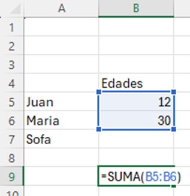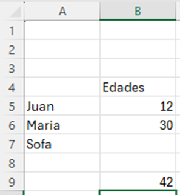 |
| Fórmula de PROMEDIO | 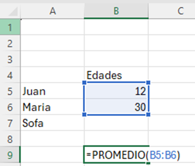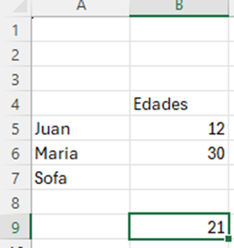 |
| Fórmula de MEDIANA | 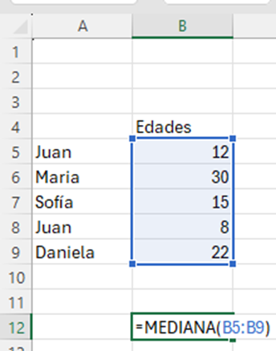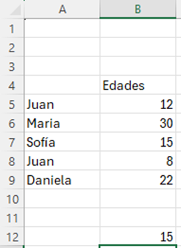 |
| Fórmula de MODA | 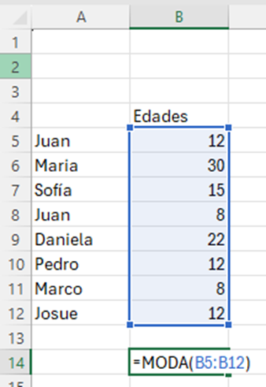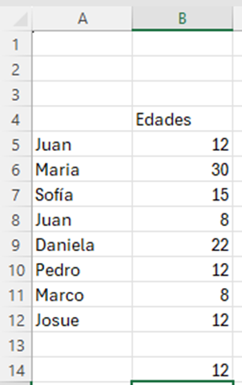 |
| Fórmula de MAX | 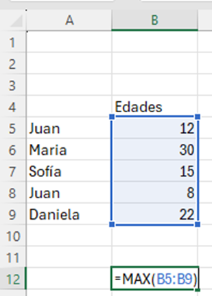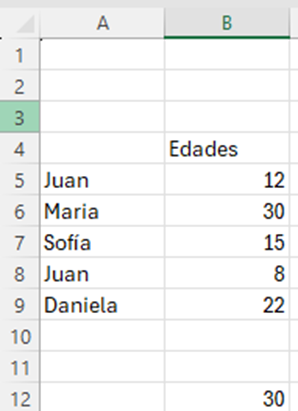 |
| Fórmula de MIN | 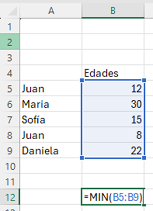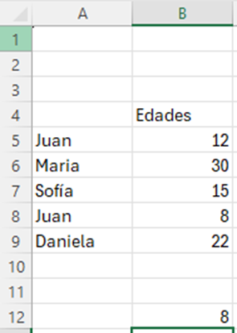 |